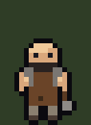
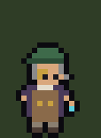
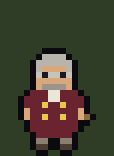
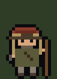
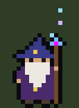
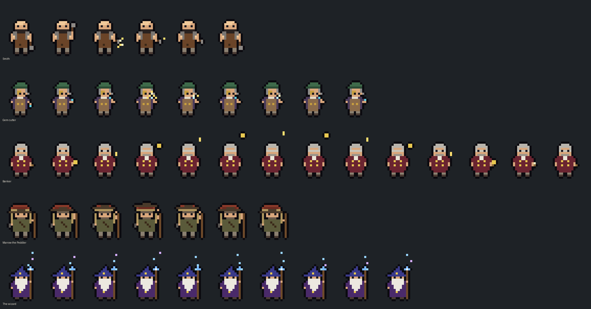
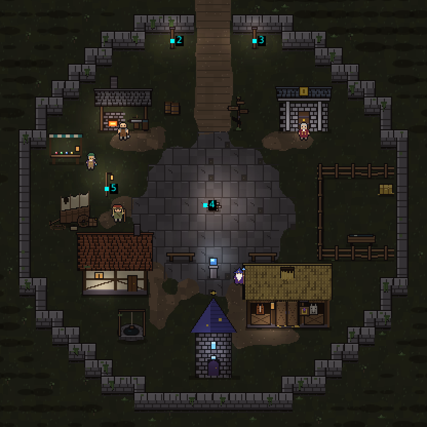

Same designs, new animations (your notes). Each person now plays a real idle loop at true speed, with room above their heads for a coin, a lifted hat or sparks. The smith also got a strike with sparks so he matches the rest.

Rests, lifts the hammer, brings it down. Sparks fly off the strike.

Lifts the gem up under her chin and turns it in the light. It flashes twice, then she lowers it.

Flicks the coin high over his head. It spins (face, edge, face) on the way up and down, and he catches it. His glasses glint as he looks up.

No more wink. He tips his hat right off his head, holds it there a moment, and puts it back.

Stands still. Only his staff moves: the orb swirls and sends sparks floating up (owner, Nov 28).

Still draft 1 frames, at game size, mocked onto the real town picture. The smith stands at his forge, the banker at the bank door, the gem cutter at the table, Marrow by his wagon, and the wizard beside his orb.

After your notes they go into the game at their spots. Tapping one opens their service: repairs, enchanting, bank, buy and sell, quest. The campfire keeps resting and fork swaps.